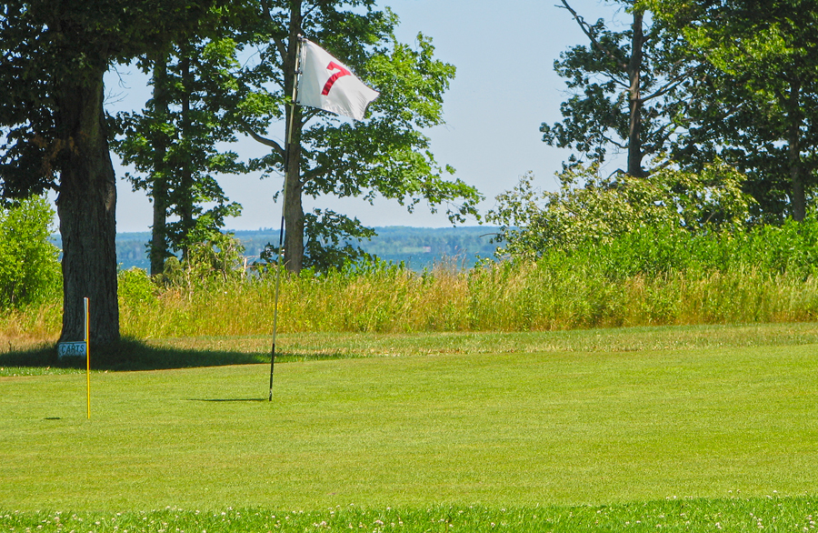

Nahma Golf Club is the closest public course to the Garden Peninsula — on the same Big Bay de Noc shoreline, established in 1922.
Garden Golf Course is the community track on the peninsula — casual, short, fine for a quick nine with neighbors. When you want something with genuine course conditioning and a layout that has been growing into itself since 1922, you drive 15 miles north on M-183 and cut west on US-2 to Nahma. Eighteen minutes from Garden, and you are on the north shore of Big Bay de Noc — the same bay you have been looking across from Fayette or from a boat out on the water, except now you are standing on it.
Getting there from Garden is its own small experience. M-183 rolls through narrow rolling hills flanked by agricultural fields and limestone cliff faces before you hit the speed of US-2. Watch for slow-moving farm equipment on M-183 — this is working farmland and tractors are real traffic mid-week. Once you cross the Sturgeon River and cut west on US-2, Ll Road comes up on the left and the peninsula road takes you south to the water's edge. No tee time, no reservation. Par 36, 9 holes. Green fees from $18.
Garden people tend to know the peninsula well and the rest of the county less so. This course has been sitting 15 miles away for over a hundred years. The setting holds up to anything you have seen from the water — you just have to be standing on the fairway to get the full version of it.

Getting off the Garden Peninsula and up to US-2 is the only mildly involved part of this drive. M-183 north out of Garden rolls through narrow hills, limestone outcroppings, and active farmland — slow-moving farm equipment is real traffic on this road, especially weekday mornings, so budget a few extra minutes if you are heading out early. Cross the Sturgeon River and hit US-2 west for 3.6 miles, then take Ll Road south toward the bay. Total distance is about 15 miles. The whole thing takes around 18 minutes under normal conditions.
The Garden Peninsula draws people for specific reasons: Fayette Historic State Park, the walleye and smallmouth bass in the bay, the deer hunting in fall, and the kind of quiet that is harder to find each year. It is not a place people end up by accident. If you are there, you sought it out.
There is no golf on the peninsula itself. When people staying near Garden want a round, Nahma Golf Club is the answer — and it has been since 1922. Whether you are heading north from Garden, meeting friends from Escanaba, making the drive from Manistique, or coming down from Gladstone, the course sits in the middle of all of it — on the north shore of Big Bay de Noc, the same bay you have been looking across from Fayette or from the water. The lakeside setting makes the trip worth it: lake views from most holes, older dish-shaped greens, and the kind of pace that matches the rest of a day on this part of the bay.
The clubhouse is open the same hours as the course. Full bar, snacks, and cold drinks. It is a good stop for a cold beer after the 9th. If you are building a few days around the peninsula and the bay, a round at Nahma fits the same rhythm as the rest of it.
Green fees from $18. No tee time required. Open May through September.
Call ahead for large groups: (906) 644-2648.